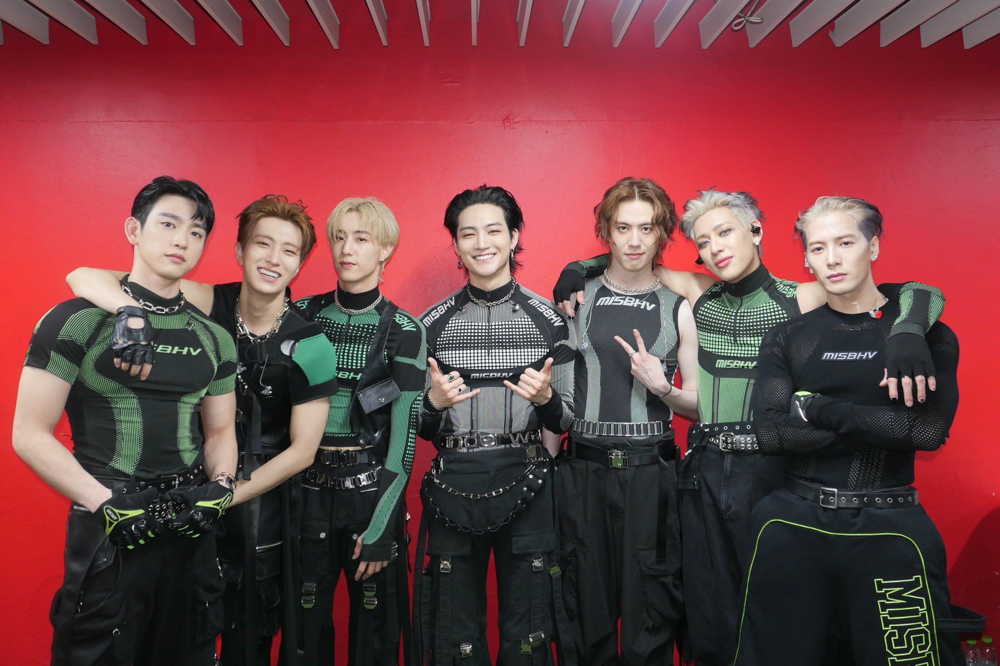
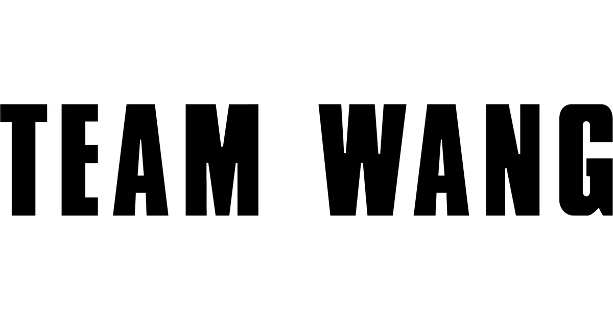

Biografia
BiografiaDebut con GOT7
Carrera musical en Solitario y Emprendimientos
Visión Empresarial y Arte de Moda
Presencia en TV y Medios
Logros y reconociminetos
Biografia y carrera
Presentación
Jackson Wang es cantante, rapero, compositor, bailarín, productor y empresario. Conocido por su energía en el escenario y su autenticidad, combina influencias asiáticas y occidentales en su música y estilo.
Origenes Deportivos y Familiares
Nació el 28 de marzo de 1994, en Kowloon Tong, Hong Kong, en una familia de atletas: su padre, Wang Ruiji esgrimista
olimpico; su madre, Zhou Ping, gimnasta de élite; y su hermano mayor, Winston, también fue gimnasta y jugador de rugby.
Empezó con gimnsia desde los 7 años, pero a los 10 se enfocó en el esgrima, entrenado por su propio padre. Obtuvo medallas de oro a nivel continental y nacional, incluyendo el campeonato asiático juvenil en 2011. Vivió en Hungría entre los 13 y 16 años por su entrenamiento.
El Giro hacia la Música
Mientras estaba estudiando en Hong Kong, fue detectado por JYP Entertaiment jugando básquet, lo que lo llevó a presentarse a audiciones. Superó a 2000 aspirantes y resultó seleccionado en diciembre del 2010.
Sus padres lo apoyaron solo despúes de que ganara el campeonato asiático juvenil, y así obtuvo permiso para mudarse a Seúl en julio de 2011 y empezar su entrenamiento en K-pop.
Dejó dos becas -una de Stannford y otra de la universidad de Hong Kong- para seguir su pasión musical.
Debut con GOT7: El Comienzo de Viaje
Debutó en 2014 como miembro de GOT7, grupo de JYP Entertaiment. Su carisma, fluidez en varios idiomas y estilos lo volvieron rápidamente un favorito del fandom global. Ganó premios desde su debut, como el de Newcomer en los SBS Entertaiment Awards.
Carrera Muiscal en Solitario y Emprendimientos
En 2017 fundó un sello musical Team Wang bajo el que lanzó su primer sencillo en inglés, Papillon.
Lanzó su álbum debut Magic Man(2019), que alcanzó #32 en Billboard 200 y fue el más alto para un artista chino debutante.
Su segundo álbum Magic Man (2022) lo llevó aún más alto, entrando al #15 en Billboard 200.
Singles como 100 Ways marcaron historia como la primera canción de un solista K-pop en entrar al Top 40 de Mediabase en EE. UU.
Visión Empresarial y Arte de Moda

En 2019-2020, amplió su marca con Team Wang Design, centrada en moda streetwear de lujo minimalista. Colaboró con marcas como Fendi y Ray-Ban.
Su idea de “Team Wang” refuerza que nada se logra solo; desde manejar su marca con pocos empleados hasta llegar a un equipo de unas 70 personas.
Presencia en TV y Medios
Ha participado y conducido en múltiples programas, como Go Fridge (China), Roommate, Inkigayo, Produce 101 China, Idol Producer y más
Jackson en Go Fridge
Logros y reconociminetos
Hasta 2025, ha acumulado 61 premios de unas 90 nominaciones,
Aparece seguido en listas de Forbes China, Tatler Asia, Gold House A100, y BoF 500. Fue incluido en 30 under 30 y 100 Digital Stars
INICIO
DISCOGRAFÍA
GOT7